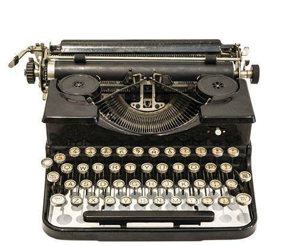

About Me
To read, please click on the typewriter image.
To read, please click on the typewriter image.
My name is MUHAMMAD NURARIF HAKIM BIN ABDULLAH, people just called me Arep. I am 19 Years Old almost twenty this July. I was born and raise in Alor Setar, Kedah. I have 4 siblings where I'm the youngest among the others. Currently, I'm a Library Informatics student at UiTM Kedah, and one step ahead until i finished my Diploma. To be honest, my target major is Law but sadly I can have it but i do believe that Allah planned is much better than what we expected. To be honest, I'm on my way to getout from my comfort zone and become a new person that is more independence and so on. I wish and looking forward for this.
This site is my way to express myself, and why I choose The Tortured Poets Department (TTPD) concept is because this Album helps me during my mental breakdown. Simply said it kind of my therapy. TTPD is one of the latest album of Taylor Swift and it suddenly become my favourite all of my life. Using this website you explore a little facts about myself, not by physical but through digital. ENJOY :>